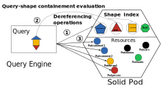
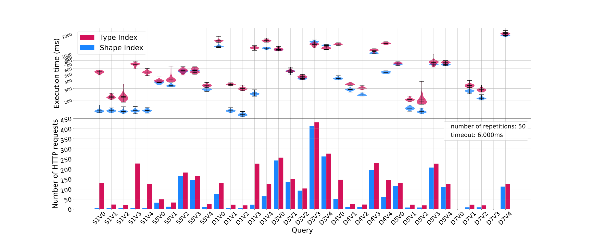

Dereferencing IRI provided more information about a term
Possibilities for data discovery with no indexing via IRI dereferencing
What is Link Traversal Query Processing and what are the
Challenges?
Why traversal queries?
Indexing can be expensive
Exploit the serendipity of the connection between IRIs
Promote decentralization of data and more individual control over data
Reduce load of servers (query executed client side)
What is Link Traversal Query Processing and what are the
Challenges?
Link Traversal Query Processing starts with a set of IRI and recursively dereference IRIs
following a reachability criteria to acquire
more
triples while answering a query.
What is Link Traversal Query Processing and are the
Challenges?
Completeness of the data based, location of data, structural information
about the data
Has focused on search space optimization, but more work can be done here (Our contribution)
Could be used for query planning (potential future contributions)
Shape Index for Search Space Optimization of Link Traversal
Queries
The network is a directed graph of resources \(d\) that are linked by IRI such as
\(N = (D, IRI) \), where the resources contain RDF subgraph \(g \in d\) and the knowledge graph of the network
is \(G= \bigcup\limits g\)
Shape Index for Search Space Optimization of Link Traversal
Queries
Data publisher (or humans, in general) like order
Eg: images at `ex:image/`, post at `ex:posts`, profile at `ex:profile` and so on
Why not make it explicit to facilitate automatic data discovery?
Shape Index for Search Space Optimization of Link Traversal
Queries
We use a shape index as a low-cost dataset summary method (content, location).
We propose that it makes explicit the way data publishers are already publishing.
We leave the option not to annotate every data source in the domain.
Shape Index for Search Space Optimization of Link Traversal
Queries
Given a shape index \(SI = \{S_1 \mapsto IRI_{s1}, S_2 \mapsto IRI_{s2}..., S_i \mapsto IRI_{si}\}\) with a
domain \(IRI_{s} = IRI_{s} \cup \bigl( \bigcup\limits IRI_{si} \bigr) \), where \(IRI_{s}\) is the set
of IRI that have no mapping with a shape and that \(IRI_{si}\) when dereferenced lead to \(d_{si}\).
We propose a function \(F(Q) = IRI_{nqr}\) that provides a set of IRI leading not nonquery relevant
documents.
Shape Index for Search Space Optimization of Link Traversal
Queries
Query containment for online source selection based on the reachability criteria method
Adaptative reachability criteria based on the discovery of the index
RDF data shape => SPARQL algebra
Shape Index for Search Space Optimization of Link Traversal
Queries
Are the star pattern of the query contained inside the shapes of the index?
Always contained with an open shapes (if we ignore the negations...)
All star pattern contained => prune rest of the domain, regardless if the domain is fully described
(complete shape index, \( d_{s}= \emptyset \) )
Complete shape index => pruning based on containment + property matching (more limited because of vocabulary reuse)
Shape Index for Search Space Optimization of Link Traversal
Queries

First, the shape index is dereferenced, then the query-shape containment operations are performed in
the query engine and lastly, only the relevant resources are dereferenced
Early Results

The execution time with shape indexes is consistently lower (up to
80% with D1V3 and S1V3) or
equal to with the type indexes (except for D3V3 and D3V4), and always uses fewer HTTP requests.
Conclusion and Future Work
Low maintenance data summary (only on updates that modify the data model or the location of data)
Could improve data quality in the publication of decentralized RDF dataset
Future work
Complexity/Overhead of the containment algorithm (impact of queries and shape profiles)
Size of the internal triple store vs number of HTTP requests
Performance in more uncertain environments: open/closed shapes, complete/incomplete
shape index, not every dataset has a shape index, more or less descriptive shapes
Shape index for query planning
Opportunities for Shape-Based Optimization of Link Traversal Queries
Authors: Bryan-Elliott TAM, Ruben TAELMAN, Pieter COLPAERT, Ruben VERBORGH